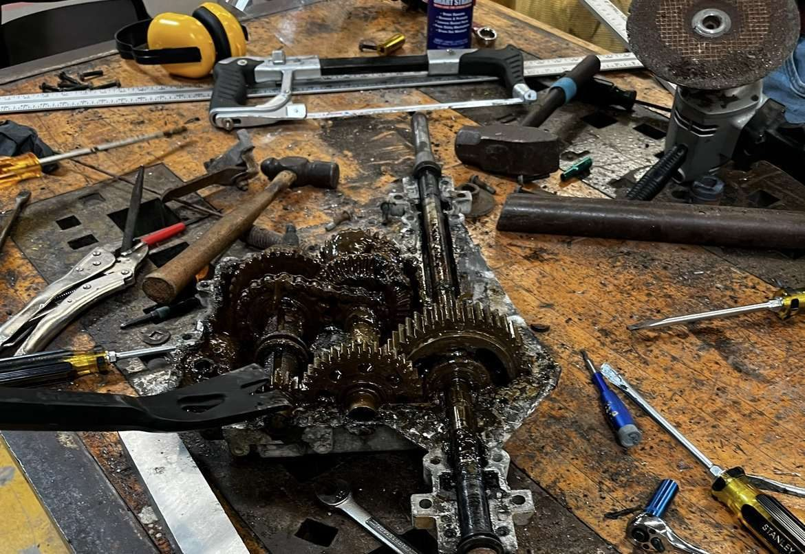
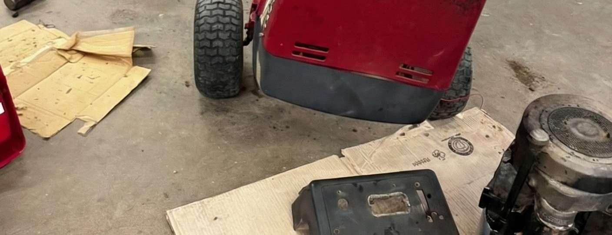
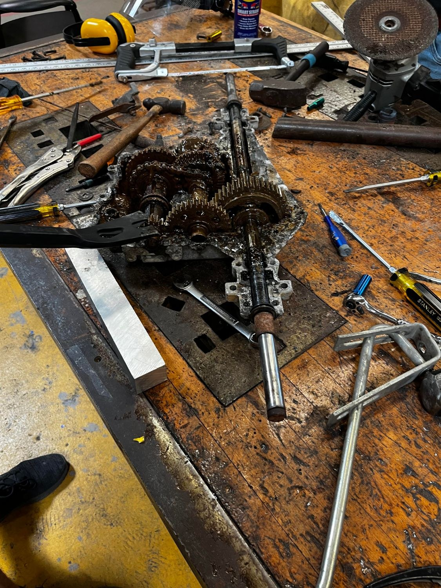
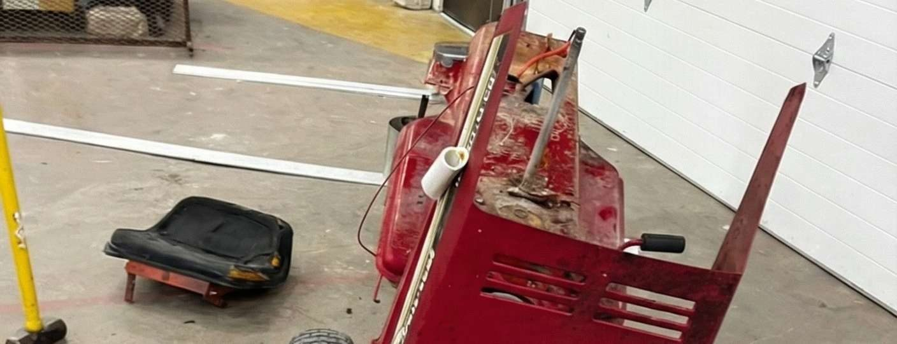

Gas-to-Electric Tractor Conversion
A favor for my old robotics teacher that turned into a full drivetrain swap: take a worn-out gas tractor, pull the engine, and rebuild it as a fully electric machine.
Teardown
First step was a complete disassembly of the gas drivetrain: engine out, fuel system removed, and the transmission evaluated for what could be reused versus replaced.



Electric Conversion
With the chassis stripped, I welded in a new electric transaxle and replaced the engine bay with a battery system, making the tractor fully electric.
This one was finished before I thought to document it properly, so apologies for the sparse photos.

Top Skills Utilized
- MIG Welding
- Drivetrain Design
- Battery Systems
- Electrical Wiring